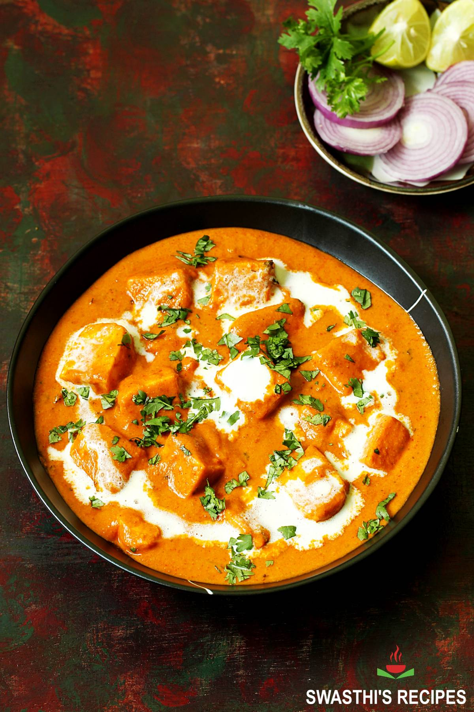
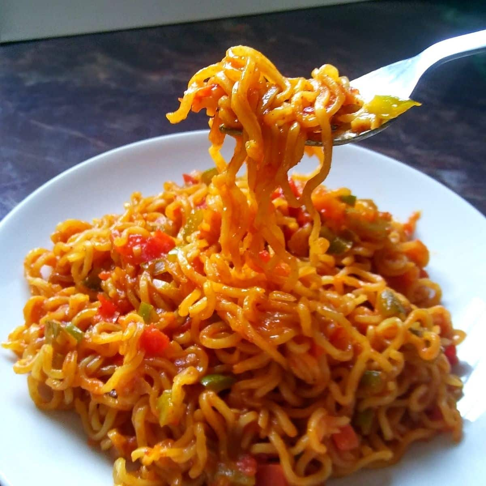

Welcome to Flavorly!
Discover the world of flavors with us. Whether you're a seasoned chef or just starting out, Flavorly is your go-to destination for all things delicious. Explore our blog for mouth-watering recipes, check out our tips and hacks to elevate your cooking game, watch our videos for step-by-step guides, and see what others are saying in our ratings section. Join our community of food lovers and share your own culinary creations on our creator page. Because taste matters!
Paneer Butter Masala

Title: Paneer Butter Masala
Description:
A rich and creamy North Indian curry made with soft paneer cubes cooked in a buttery tomato gravy.
Time: 30 mins
Difficulty: Medium
Tag: ⭐ Popular
Masala Maggi

Title: Masala Maggi
Description:
A quick and spicy twist to your favorite noodles with fresh veggies and flavorful spices.
Time: 10 mins
Difficulty: Easy
Tag: ⚡ Quick
Veg Sandwich
 Title:
Title: Veg Sandwich
Description:
A healthy and tasty sandwich loaded with fresh vegetables and chutney, perfect for breakfast.
Time: 15 mins
Difficulty: Easy
Tag: 🥗 Healthy
Chocolate Mug Cake
Title: Chocolate Mug Cake
Description:
A soft and gooey chocolate cake made in just minutes using a microwave.
Time: 15 mins
Difficulty: Easy
Tag: 🍫 Dessert
Poha
Title: Poha
Description:
A light and flavorful Indian breakfast made with flattened rice, peanuts, and spices.
Time: 20 min
Difficulty: Easy
Tag: 🌞 Breakfast